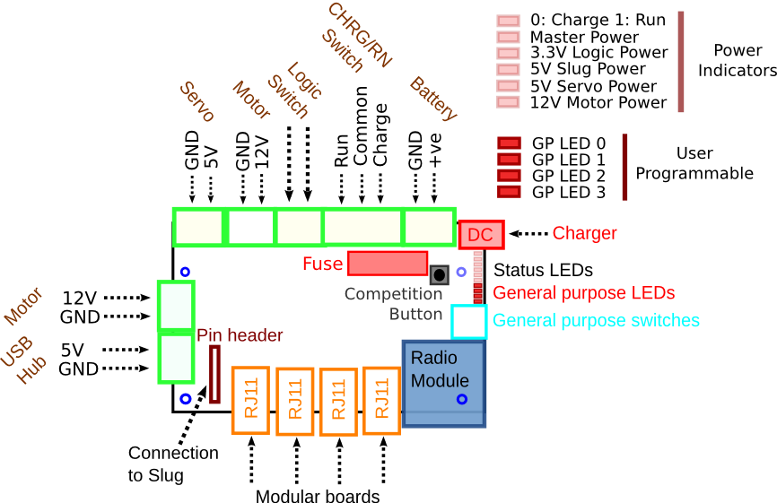
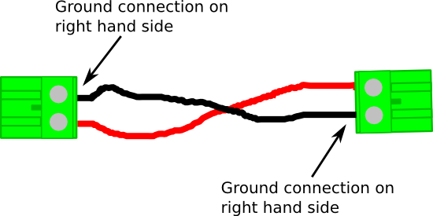

Power Board
All electronic devices need power. Different devices require different amounts of power, for example a motor requires much more power than an LED. It is the job of the power board to supply the right amount of power to all of the different boards or 'modules' in your kit. The primary source of power for you robot is its 12V battery. This is capable of running your robot for a few hours, depending on the size and complexity of your robot. When this runs out your robot's secondy source of power is the mains electricity, supplied via a battery charger. When you are not testing your robot, you should be charging it's batteries!
WARNING: When you are not using your robot, you should be charging its battery!
WARNING: Switch off you robot before making any modifications to it!
Board Outline
The board outline of the Power Board is illustrated in Figure 1:

Figure 1 - Outline of Power Board
Modules
Your robotics kit is made up of 4 modules:
- Power Board
- JointIO Board
- PWM Board
- Motor Board
The power board is at the centre of the kit as all other modules plug into it. The power board communicates with each of the boards using the black/gray RJ11 Cables in your kit. The jointio, pwm and motor boards all have a single RJ11 socket, whilst the power board has four. An RJ11 Cable should connect each board to any one of the four RJ11 sockets on the power board.
Technical Specification
- Fused connection to 12V battery and charger
- Zigbee radio module
- 4 User controllable LEDs
- 4 User readable Switches
- Competition button
- 5V Servo rail connection
- 2x 12V Motor rail connection
- Status LEDs
Making Connections
Whilst each module is connected to the power board via the RJ11 cables, some boards, such as the Motor board, require additional power connections. These are made using the green camcon connectors included in you kit. You will need to make up the connector shown in Figure 3 for each of the following connectors.
- Power board (12V) -> Motor board (12V)
- Power board (5V) -> PWM Board (5V)

Figure 2 - Camcon power connections
To connect power to the USB Hub, use the special connector supplied in your kit. Ensure that you connect it to the USB Hub 5V rail on the power board. Do not connect the USB Hub to the 12V motor rails
Two switches are supplied in your kit. One is the charge-run switch and the other is the power switch:
- Charge-run Switch:
- Power Switch:
Inputs
The power board has a (red) bank of four switches. You can use a small screwdriver to change the position of the switches. The state of the switches can be read in your robot's code and used to alter its behaviour in any way conceivable. A typical use of the switches is to put your robot into different modes, for example you may have a 'demo' mode (used for testing) and a 'competition' mode (used at the competition) and use the switches to select between the two.
Outputs
The power board has four user controllable LEDs which may be used to indicate your robot has reached particular parts of the code or just for visual effect!
Troubleshooting
Help
Programming Interface
A programming interface is a set of rules explaining how you can control a specific module from within your robot's python code.
Reading Inputs
To read one of the four switches on the power board, use the following in your code
# to read switch SWITCH_NO on the power board:
power.switch[SWITCH_NO]
# where SWITCH_NO = 0,1,2,3
Setting Outputs
To set or clear an LED on the power board, use the following code:
# to turn on led LED_NO on the power board:
power.led[LED_NO] = 1
# where LED_NO = 0,1,2,3
# similarly, to turn it of:
power.led[LED_NO] = 0